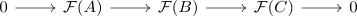
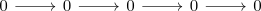

exact functor and preserving quasi isomorphisms
Proposition
Let $\mathcal{A}, \mathcal{B}$ be abelian categories and $\mathcal{f}: \mathcal{A} \rightarrow \mathcal{B}$ be an additive functor
TFAE:
- $\mathcal{F}$ is exact
- $\mathcal{F}$ preserves quasi-isomorphisms
Proof
1) $\implies$ 2)
follows by FHHF for exact as
\begin{align*}
\mathcal{F}(H(-)) \cong H(\mathcal{F}(-))
\end{align*}
2) $\implies$ 1)
Proof by contraposition Suppose $\mathcal{F}$ is not exact, then by exact functor and exact sequence there exists an exact sequence

which is not preserved, meaning

is not exact.
This sequence in $\mathcal{A}$ is quasi-isomorphic to

which by additive functor and zero object gets send to
but the images under $\mathcal{F}(-)$ are not quasi isomorphic (cf. exactness and homology)